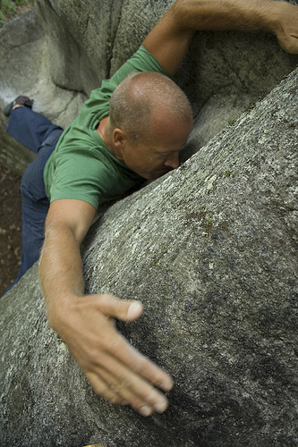

Lynxklippan
GPS: 59.2981,18.4844
Allmänt
Fin, varierad klippa på Värmdö på vägen till Strömma-området. Delvis hög men bra landningar.
Vägbeskrivning
Bil
Ligger vid Lostigen i Skeppsdalsström (bakom Värmdö Golf), syns tydligt från vägen. Parkera bilen med förstånd.
Buss
Buss 433 och 434 från Slussen (ca 25 minuter), kliv av på hållplats Skeppdalström.
Följ Svartträskvägen, förbi Återvägen, Svartträsket och Dalgången. Gå åt höger när du kommer till en t-korsning ut på Lostigen. Du ska till Lostigen någonstans mellan nr 33-72.
Det tar ca 15 min att gå ifrån busshållplatsen.
Sektor 1
Klipp-partierna visas från vägen och inåt skogen.
Första klippan från vägen.
- 1, blå
- Trevor Cooper-Williams, top out
- ?
-
- 2, röd
- Leberkäse
- 6C
- Startar i tydlig undercling och följer grepplinje snett upp åt höger, top out.
- 3, gul
- Lynx au Soleil
- 6C ss
- Hög men fin arete med känslig top out.
- 1
- Le Frigo assis
- 7a ss
- hela väggen tv om övre delen eliminierad, top out.
- 2
- Le Singe (de Kristineberg)
- 5A ss
- Följer tydlig spricklinje tv om mosspartierna i bildens h kant upp till balkongen med mossa 2/3delar upp
Det finns säkert möjligheter att göra flera problem här om man vill.
Sektor 2
- 1, röd
- Presse
- 6B ss
- Klurigt 1:a move, top out
- 2, blå
- Serieux
- 6C ss
- Brant start, nästan hela vägen upp
- 4
- Double vie
- 6A ss
- Tydliga diedern mellan 1 och 2 med start från h sidan.
För övrigt så finns flera projekt som att försöka länka ifrån 3. till 2. samt göra ng mellan 1. och 2.
Sektor 3
- 1, röd
- Le Trou
- 5C ss
- juggarna till vänster eliminerade, top out.

- 2, grön
- L'Ombre
- 7A ss
- jugar th om areten eliminerade, top out.
- 3, gul
- C'est comme ca
- 6C ss
- Kroppsklättring och top out.
- 4, rosa
- Le Vieux Campeur
- 7A ss
- Följer tydliga sprickan upp till känslig top out, juggarna till vänster om areten och hela väggen till vänster eliminerade.
Högra delen
- 1, blå
- Le Frog
- 6B+ ss
- Startar i hål till höger under nischen, sedan upp i denna.
- 1a, blå
- Friction
- 6A
- klurig
- 2, gul
- Variable
- 6B+ ss
- teknik och balans
- 3, grön
- Coupin
- 6A+ ss
- Traversera från starten på [[Lynxklippan/Verso|Verso]] till slutet på [[Lynxklippan/M._Blaireau|M. Blaireau]], top out.
- 3a, grön
- Coupin Swing
- 6B+ ss
- TRV. Låg variant med skön swing
- 4, röd
- Verso
- 6B+/C ss
- Start i sprickan, rakt upp, slutar stående i nischen.
- 5
- La Cascade
- 6B ss
- Hög, top out...
Vänstra delen
- 1, lila
- Le Bebe
- 7B+ ss
- Hela vägen via areten, top out.
- 1a
- M. Blaireau
- 7A+/B ss
- Insteg via konstig h fingerjam klart när man är ståendes på badkarskanten.
- 1b
- Mme Blaierau
- 7A+
- Startar med händerna på badkarskanten och följer sedan areten, top out.
- 1c
- Silberdachs...
- 7B+/C ss
- Startar sittande vid "Le Frog" traversera via 1 grepp under linien "Coupin"(dessa grepp ingår ej) och sedan direkt till Badkaret och avslutar med Mme Blaierau.
Sektor 4
- 1, grön
- Vol du Karma
- 6A ss
- Stora greppen till höger vid top out eliminerade.
- 2, röd
- Kolis
- 6A ss
- Akta trädet
- 1, röd
- Le Fou
- 6A+ ss
- Ett ton sten flyttat för detta problem!
Kategori:Stockholm
Kategori:Nacka-Värmdö
Kategori:Saknar ledmall
Copyright (C) Permission is granted to copy, distribute and/or modify this document under the terms of the GNU Free Documentation License, Version 1.3